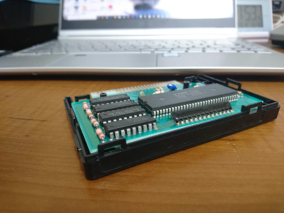

[前]
印刷して、トンボに従ってカット。角は、角丸くんという道具を使って丸めます。
元々のラベルを剥がして、新しいラベルを貼り付けて完成。
この改造により、Konamiゲームコレクションで SCC対応の BGM が聴けるようになったり、
自作の 128KB (1Mbit) プログラムの動作確認をできるようになったりします。
(バッテリーバックアップ機能は無いので、電源を切ると消えます。)
※DRAM増設改造とラベルの貼り替えで、売却時の価値は下がると思われます。
私は売却するつもりはないので改造しましたが、将来売却する可能性がある人は改造はお薦めしません。
最後に、ラッチの再確認です。


[最初]